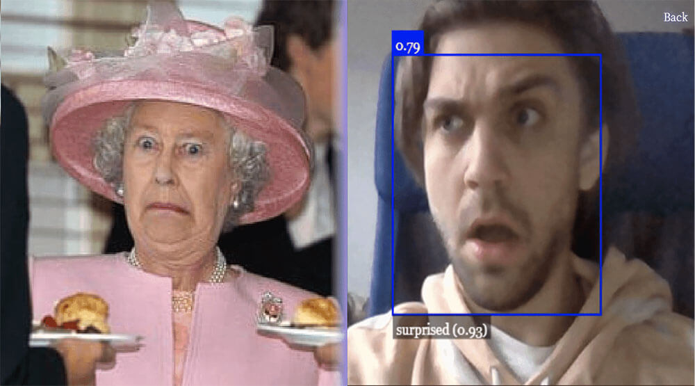
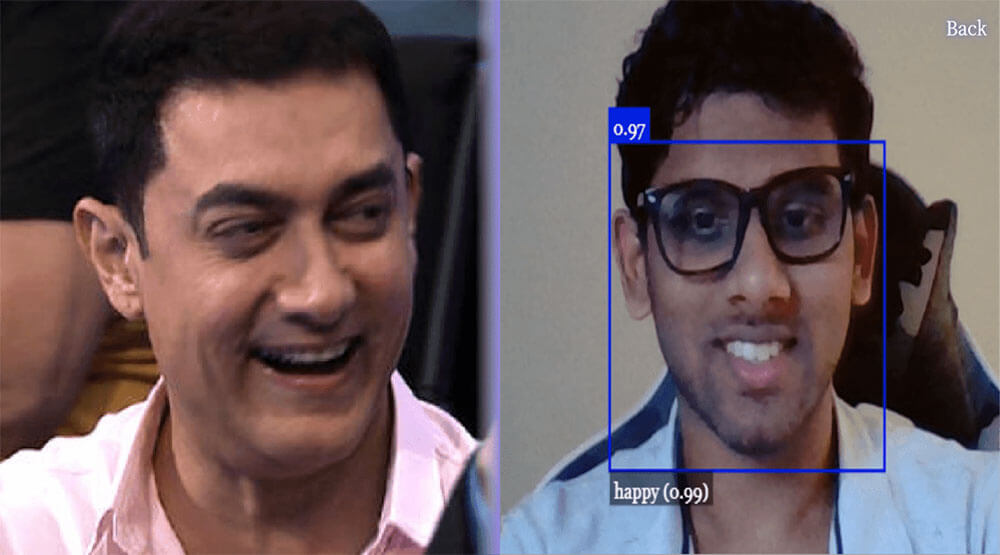
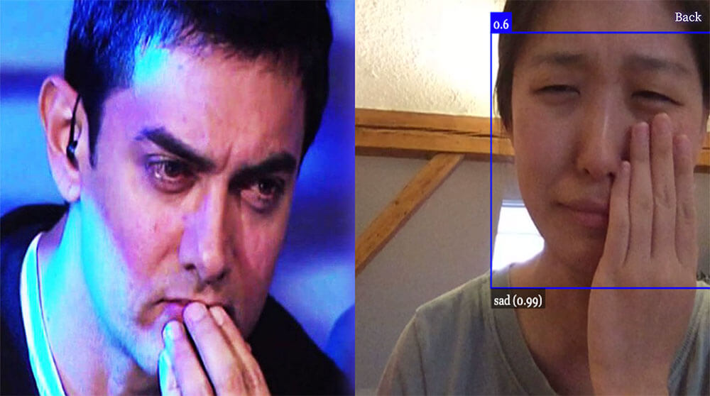
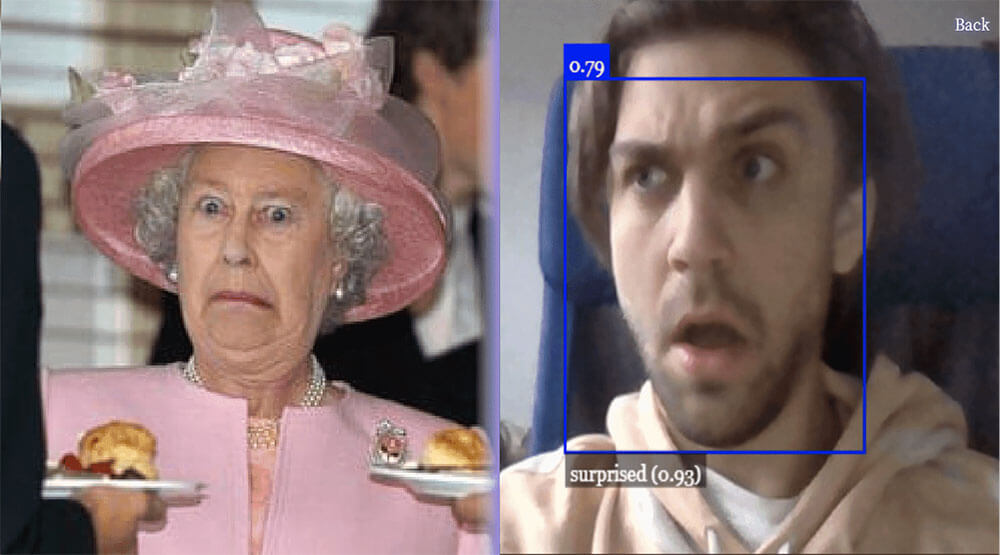
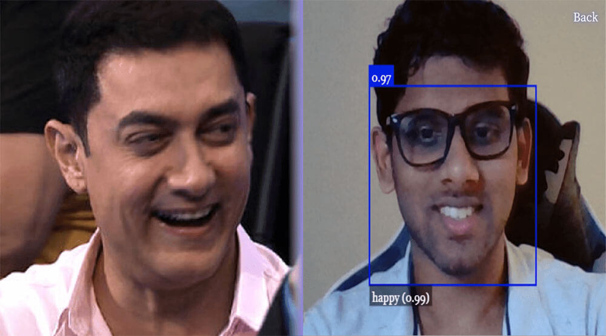
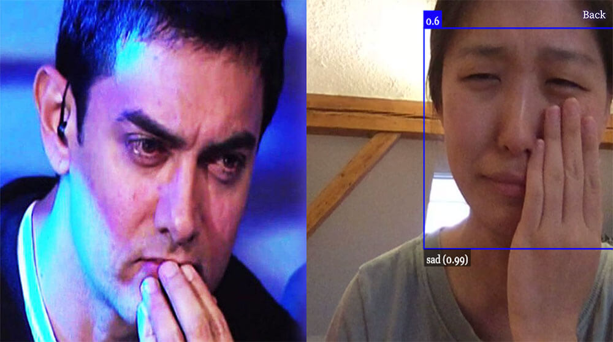

Screenshot Images
Empathy AI
- 2021
- Project : Forgiveness, Empathy, Emotion, and UX
- by Prof.Olia Lialina
- Merz-Akademie SS
People can get hurt emotionally going through reality. Thus they might want to be consoled by someone.
But it would be difficult that your Real people around you give you appropriate comfort at all times and without any questions.
Therefore, to slim the odds of more hurt from real people, some tentative users may look for Artificial Friends, AI.
According to some articles, they use mimicry to have emotional interaction with a human. So as you can see, they imitate the facial expression or behaviors of humans.
Applying the fact, they can give you not only a warm-hearted but also unlimited consolation you have wanted.